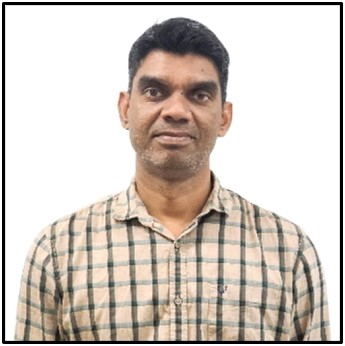

A passionate PhD candidate with over 7 years of experience in academic teaching and research. Strongly aware of the state-of-the-art of research laboratory practice. Able to work independently and as part of a multi-disciplinary research and academic team. Demonstrated strong research ownership by conducting experiments on triboelectric nanogenerators for environmental energy harvesting and extending this study to IoT applications reflects both initiatives and practical perceptions. Experienced in programming specialized software to build real-time, self-sustainable, wireless electronic systems using nanogenerators, provides a potential benchmark for building next-generation technologies.
Research Expertise:Triboelectric Nanogenerators, IoT based Human-Machine Interfaces, Wireless communications, and Programming microcontrollers for IoT modules
Software:LabVIEW, Arduino, Solid Works, Origin, C, C++, .NET, SQL Server, and HTML.